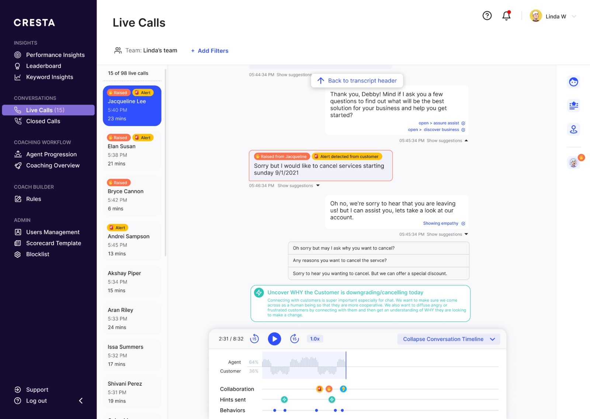
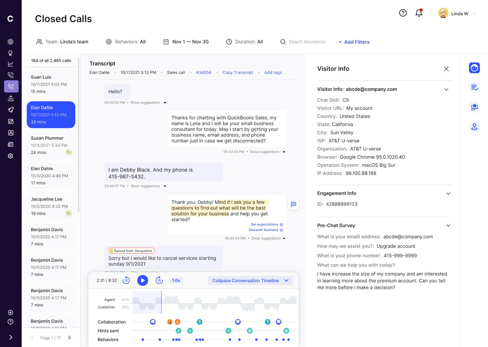
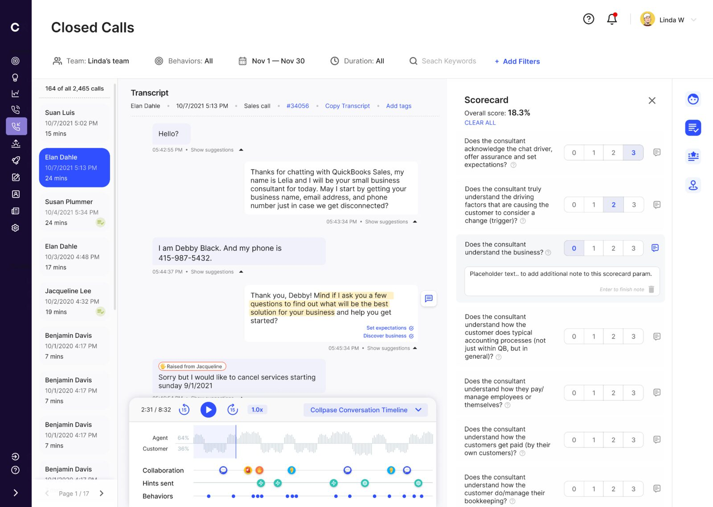
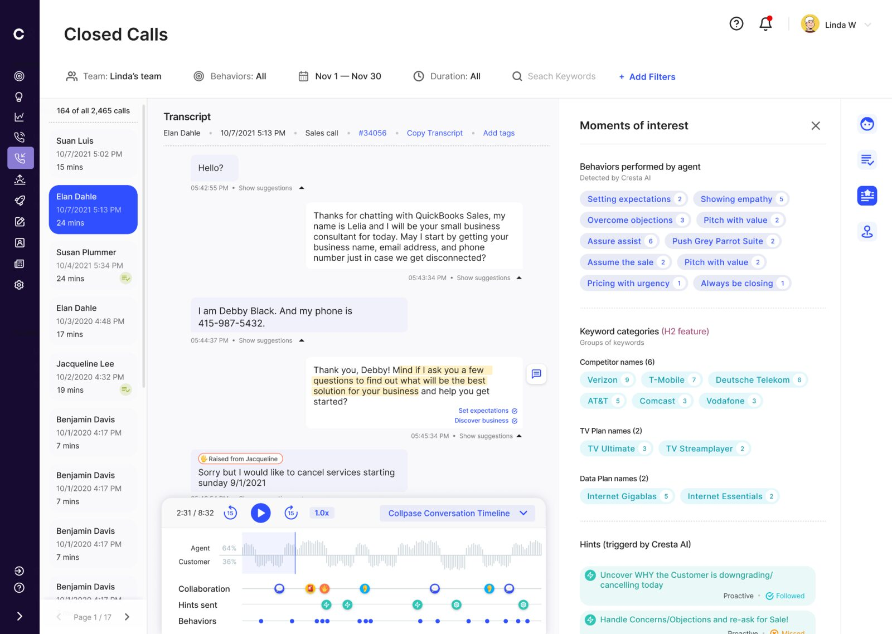
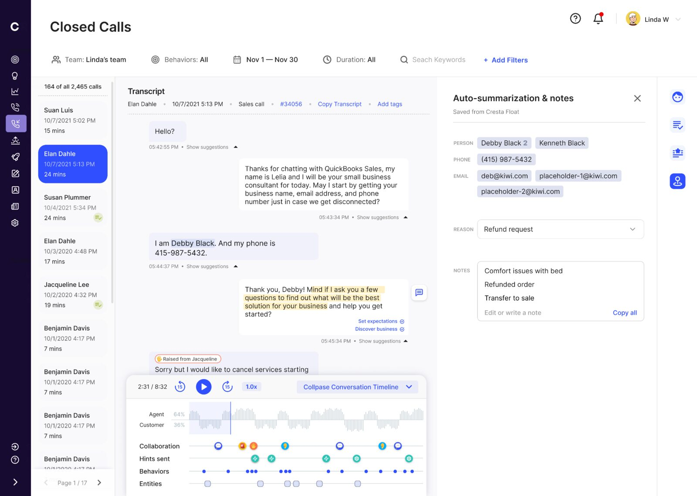
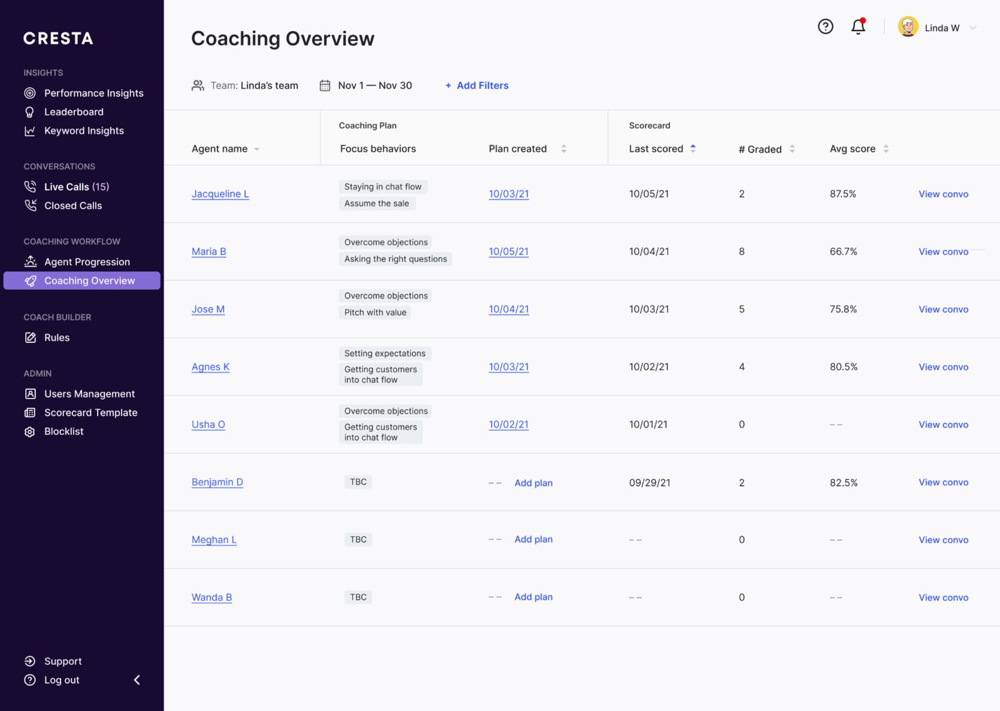
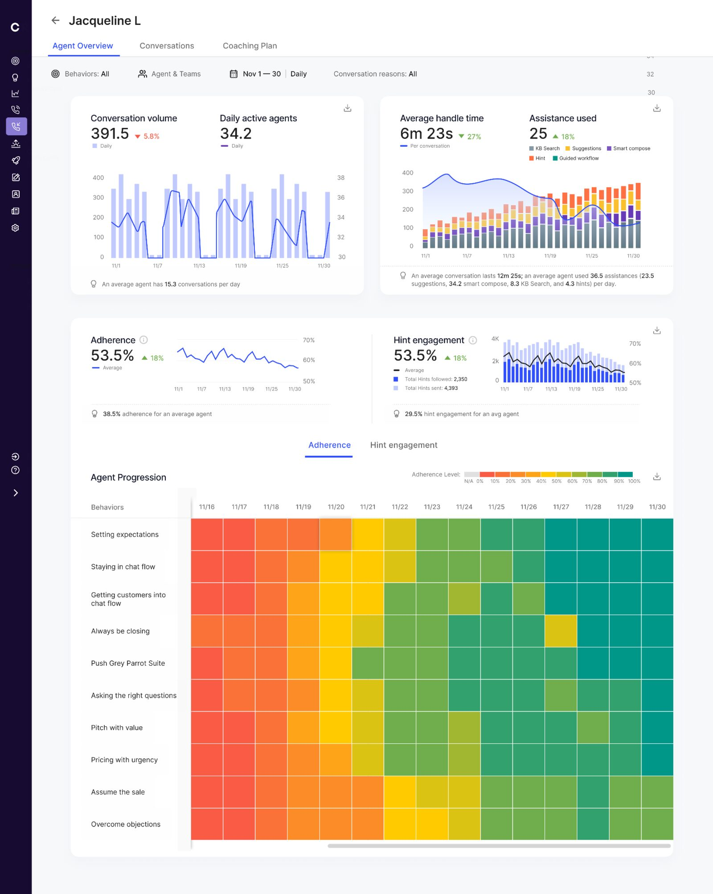
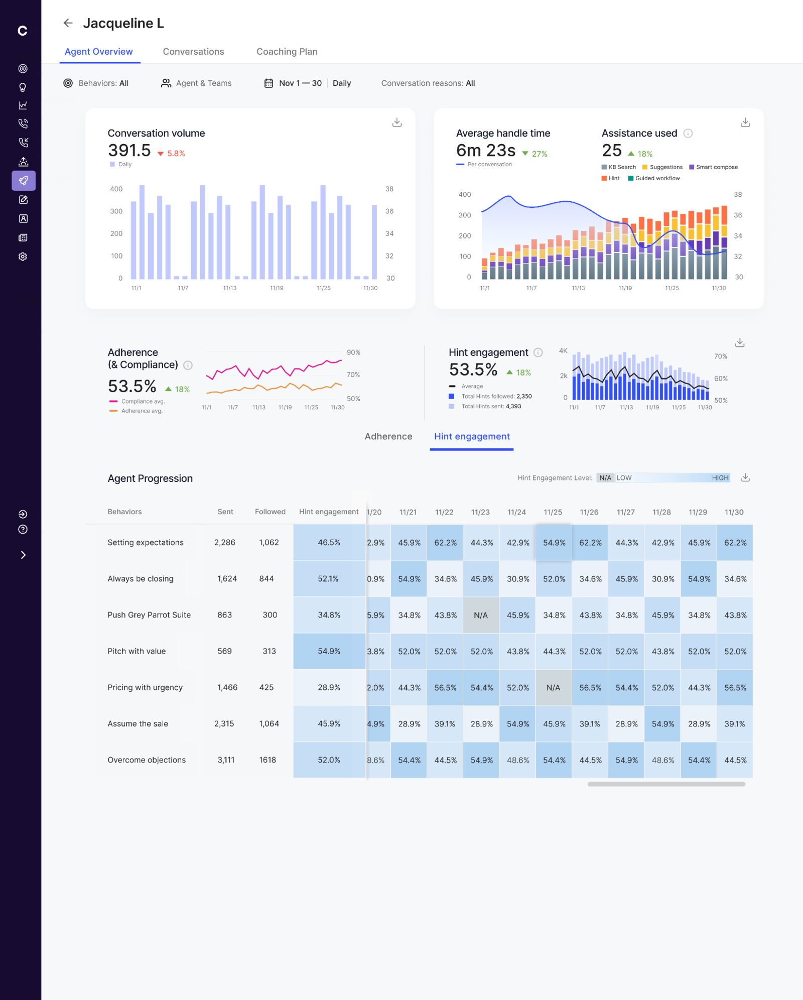
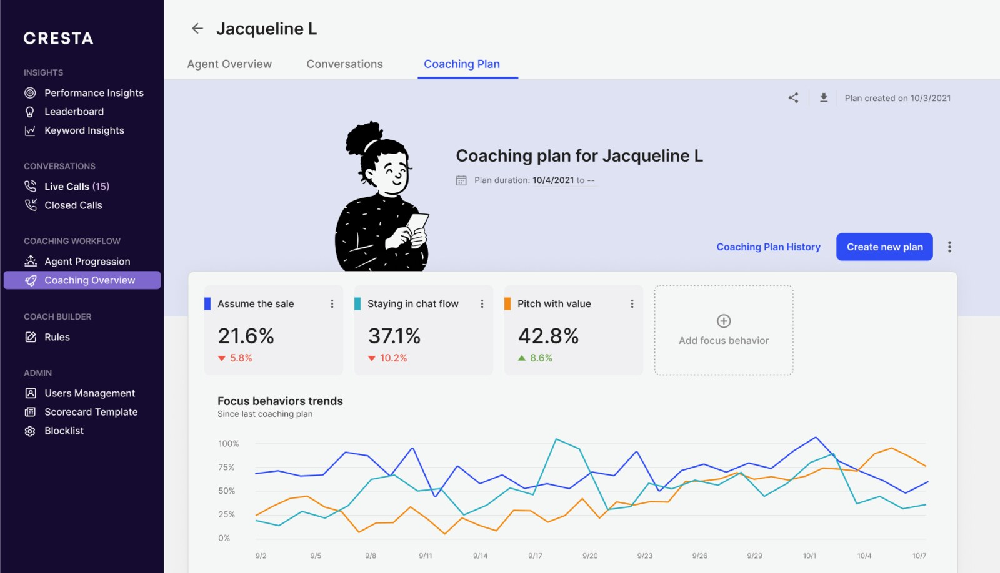

Case study
Cresta Coach
Cresta is a coaching platform aiming to solve the problem of high churn in contact centers. I worked on serving AI features on an intuitive design to help employees access feedback from managers to improve.
Managers were spending 40% of their week hunting through call recordings for coachable moments instead of actually coaching agents. Manual review reached only 1–2% of all voice and chat, so most agents got feedback that was late, thin, or biased by whichever call happened to get pulled.
I re-designed the entire loop: have AI provide real time inputs on live calls, perform detailed review of completed calls, then provide targeted, actionable coaching customized for each agent. This resulted in managers running 75% more coaching sessions per week.
Context
What a contact centre looks like
The walk
Live call
Facilitate real time intervention by managers
Managers had the problem of being pulled by multiple agents within a short window, lacking context of the specific call and being needed to intervene with minimal context. Using AI, I designed an interface where the manager gets a real time summary of how the call is going, and can jump in to collaborate with an agent the moment they ‘raise a hand’, exactly how a floor supervisor would in a real call centre. Alerts and detected behaviors sit inline in the transcript, so the reason to step in is visible immediately. Resulted in 35+% productivity boost for managers.

Decision 1
Ask first, then let the AI volunteer
A raised hand and an AI alert look similar on screen, but they ask for different levels of trust. When the agent asks for help, the product can be useful even if the path is a little clunky. When the AI interrupts a manager, one bad alert makes the next one easier to ignore. I would ship the ask-first flow before the AI-volunteers flow, then earn the right to interrupt.
More automation, or fewer false interruptions.
Closed calls — 1 of 4
Gathering context
Manager immediately understands the customer’s pain point the moment they open a completed call’s transcript to review an agent’s handling of the situation.

Closed calls — 2 of 4
Specific actionable feedback
Managers can provide ratings to agents, adding targeted comments, which helps each agent receive specific, actionable feedback to iterate on and improve each week.

Decision 2
Keep the score and its evidence together
The scorecard began as a separate grading surface. That asked managers to remember the call while they scored it. We moved the note onto the rubric row and kept the transcript beside it, so the score, the reason, and the exact customer turn stayed together.
A cleaner standalone form, or less context switching and a clearer audit trail.
Closed calls — 3 of 4
Focus specifically on moments of interest
Instead of the manager having to review the entire call, I used AI to surface all moments of interest through the conversation that deserve the attention of the manager when delivering a review of the call.

Decision 3
Turn the metric into a path to evidence
The first versions summarized a call with percentages. They looked analytical, but they did not tell the manager what to do next. We moved to counts, then made every count clickable. A chip opens the timestamped instances and takes the manager straight to the matching turn in the transcript. The metric stopped being a report and became navigation.
A compact summary, or direct access to the moment behind it.
Where it fails
A flat list does not survive a long call
The shipped panel works on a short call. On a 40-minute call, dozens of detected moments become another long list to scan. Today I would group moments by behavior, collapse the groups by default, and reveal individual timestamps only when the manager asks for them.
Closed calls — 4 of 4
Simplify hand-offs
To minimize the friction in hand-offs between agents (either AI or human), entities are extracted and summarised from the transcript.

Coaching hub
All agents on one screen
A manager can access a list of all agents reporting to them, and access all previous calls, past reviews from one screen.

Agent overview — 1 of 2
A 360-degree look at one agent
Agent’s performance metrics like conversation volume, average handle time, past reviews, current performance and marginal improvement are all shown in one screen.

Agent overview — 2 of 2
Where the gap actually shows up
The hint engagement tab reads the same way, one tab over: 2,350 hints followed out of 4,393 sent. The progression table breaks it down behavior by behavior, so a coaching conversation starts from a number and a date rather than an impression.

Decision 4
Keep behavior progress tied to evidence
The hard part was not drawing the dashboard. It was deciding which metrics deserved to exist. If a number did not change the coaching conversation, it did not make the cut. Progress had to point back to the calls and moments behind it, so a manager could coach from evidence instead of an impression.
More measurements, or fewer numbers a manager can act on.
Coaching plan
Personalised coaching plan
Manager can keep a record and track progress over time across all personalised reviews (score-cards) given to each agent.

V0 tradeoff
Link to scoring instead of rebuilding it here
For V0, the coaching plan showed the scorecards and linked back to the scoring tab. We did not rebuild scorecard editing inside the plan. That kept grading in one place and protected the full loop: find the moment, score it, choose the behavior, and record the 1:1.
What I would change
Measure behavior change, not only coaching activity
Four times more coaching sessions showed that managers adopted the workflow. It did not prove that coaching worked. The stronger measure is whether the behavior named in a plan changes across later calls. I would instrument that from the start, alongside time to find a coachable moment and time to complete a review.
Results
Improved manager efficiency by 35%, decreased average handle time by 15% and drastically reduced agent attrition from 120% to 60%.